The relationships between humidity functions are shown below, which are important for calculations used by engineers and scientists, for example to understand air conditioning systems. These functions may play a key role in developing more energy-efficient systems. Understanding the stability of these functions is shown, as they underpin many methodologies in this field.
A grid of temperature and relative humidity values, ranging from 0°C to 100°C and 0% to 100% RH respectively, was used to test the functions. Contour plots are used to visualise interactions between derived variables across the temperature-humidity grid. The analysis includes validation checks for temperature and relative humidity calculations, to identify how the function interact with each other.
Note: the humidity functions assume atmospheric pressure.
TRHgrid: Dataset used to visualise the functions
A grid of temperature and relative humidity values is used to analysis the relationship between derived variables. A grid of temperature and humidity between 0 to 100°C and 0 to 100%RH with 0.25°C and 1%RH spacing. The expand.grid() function creates a complete factorial combination of all temperature and relative humidity values, where each unique temperature-humidity pair is represented..
Temp <- seq(0, 100, 0.25)
RH <- seq(0, 100, 1)
TRHgrid <-
expand.grid(Temp, RH) |>
tibble() |>
rename(Temp = Var1, RH = Var2)
summary(TRHgrid)
#> Temp RH
#> Min. : 0 Min. : 0
#> 1st Qu.: 25 1st Qu.: 25
#> Median : 50 Median : 50
#> Mean : 50 Mean : 50
#> 3rd Qu.: 75 3rd Qu.: 75
#> Max. :100 Max. :100Examples of use of the functions
Starting with input data of temperature and relative humidity, a wide range of derived variables can be computed.
# Functions applied on the mydata dataset
head(mydata) |>
mutate(
Absolute_Humidity = calcAH(Temp, RH),
Dew_Point = calcDP(Temp, RH),
Mixing_Ratio = calcMR(Temp, RH),
Humidity_Ratio = calcHR(Temp, RH),
Enthalpy = calcEnthalpy(Temp, RH),
Saturation_Vapour_Pressure = calcPws(Temp),
Actual_Vapour_Pressure = calcPw(Temp, RH),
Air_Density = calcAD(Temp, RH),
Temp_calc = calcTemp(RH, Dew_Point),
RH_AH_calc = calcRH_AH(Temp, Absolute_Humidity),
RH_DP_calc = calcRH_DP(Temp, Dew_Point)
) |>
glimpse()
#> Rows: 6
#> Columns: 16
#> $ Site <chr> "London", "London", "London", "London", "Lo…
#> $ Sensor <chr> "Room 1", "Room 1", "Room 1", "Room 1", "Ro…
#> $ Date <dttm> 2024-01-01 00:00:00, 2024-01-01 00:15:00, …
#> $ Temp <dbl> 21.8, 21.8, 21.8, 21.7, 21.7, 21.7
#> $ RH <dbl> 36.8, 36.7, 36.6, 36.6, 36.5, 36.2
#> $ Absolute_Humidity <dbl> 7.052415, 7.033251, 7.014087, 6.973723, 6.9…
#> $ Dew_Point <dbl> 6.383970, 6.344456, 6.304848, 6.216205, 6.1…
#> $ Mixing_Ratio <dbl> 5.959586, 5.943237, 5.926888, 5.890432, 5.8…
#> $ Humidity_Ratio <dbl> 0.8563133, 0.8559750, 0.8556350, 0.8548712,…
#> $ Enthalpy <dbl> 37.16251, 37.12097, 37.07942, 36.88466, 36.…
#> $ Saturation_Vapour_Pressure <dbl> 26.13122, 26.13122, 26.13122, 25.97199, 25.…
#> $ Actual_Vapour_Pressure <dbl> 9.616288, 9.590156, 9.564025, 9.505748, 9.4…
#> $ Air_Density <dbl> 1.196694, 1.196694, 1.196694, 1.197100, 1.1…
#> $ Temp_calc <dbl> 21.8, 21.8, 21.8, 21.7, 21.7, 21.7
#> $ RH_AH_calc <dbl> 36.8, 36.7, 36.6, 36.6, 36.5, 36.2
#> $ RH_DP_calc <dbl> 36.8, 36.7, 36.6, 36.6, 36.5, 36.2Using the relationship between temperature, absolute humidity and dew point can be used to adjust the relative humidity. The functions can be used in combination to determine the adjustments needed to reach a target relative humidity. This approach assumes constant pressure, which is typical for most indoor situations.
Adjustment Methods:
- Changing Absolute Humidity:
- Increasing absolute humidity at a constant temperature will increase RH.
- Decreasing absolute humidity at a constant temperature will decrease RH.
- Changing Temperature:
- Decreasing temperature at constant absolute humidity will increase RH.
- Increasing temperature at constant absolute humidity will decrease RH.
- Using Dew Point:
- The difference between air temperature and dew point indicates how close the air is to saturation.
- Adjusting temperature closer to the dew point increases RH, while moving it away decreases RH.
# Graph Absolute Humidity
head(mydata) |>
graph_psychrometric(y_func = calcAH) +
theme_bw()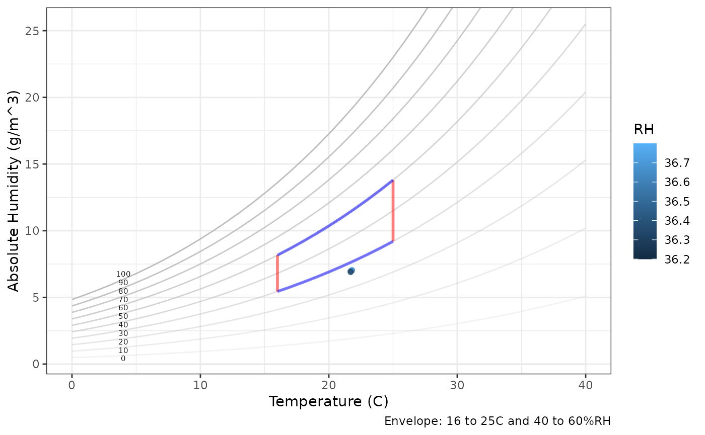
# Changing Absolute Humidity
using_calcAH <- mydata |>
mutate(
# Absolute humidity, AH
AH = calcAH(Temp, RH),
# Dew point, DP
DP = calcDP(Temp, RH),
# Target RH
tRH = 50,
# AH*: AHstar new absolute humidity using the target relative humidity (tRH)
AHstar = calcAH(Temp, tRH),
# Difference in measured AH and AH*
dAH = AHstar - AH,
# Check
AHcheck = AHstar - (AH + dAH),
# RH*: RH star - the new RH using AH* and measured temperature
RHstarAH = calcRH_AH(Temp, AHstar),
# Difference from target
RHerrorAH = RHstarAH - tRH,
)
# Graph the results
using_calcAH |>
ggplot() +
geom_line(aes(Date, Temp), col = "red", alpha = 0.5) +
geom_line(aes(Date, RH), col = "blue", alpha = 0.5) +
geom_line(aes(Date, AH), col = "green", alpha = 0.5) +
geom_line(aes(Date, RHstarAH), col = "darkblue") + # should be a straight line (see below)
geom_line(aes(Date, AHstar), col = "darkgreen") +
labs(title = "Using absolute humidity to adjust relative humidity",
subtitle = "Measure absolute humidity (light green), new absolute humidity (dark green),
resultant relative humidity (dark blue)") +
theme_bw()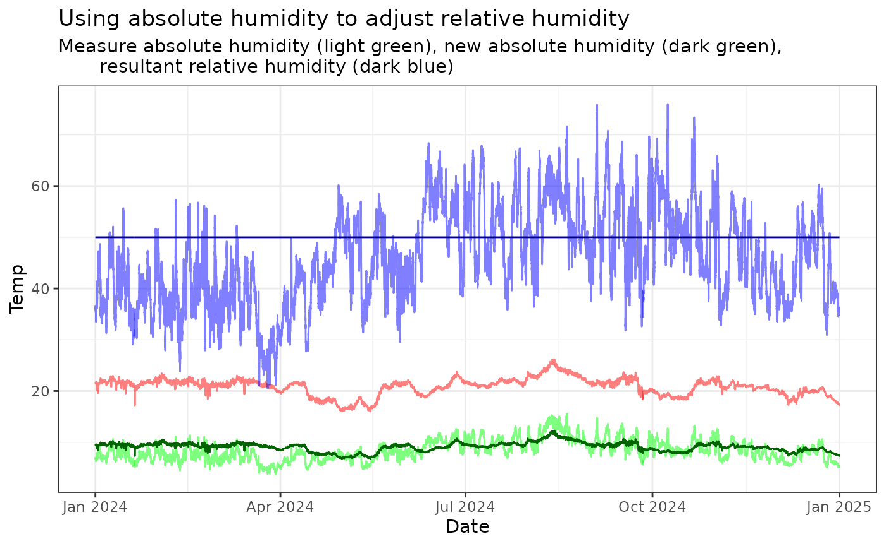
# Plot the difference and check the error
using_calcAH |>
ggplot() +
geom_line(aes(Date, dAH), col = "darkgreen") +
geom_line(aes(Date, RHerrorAH), col = "darkblue") + # should be a straight line (see below)
geom_smooth(aes(Date, dAH)) +
labs(title = "Using absolute humidity to adjust relative humidity",
subtitle = "Positve values means adding humidity and vice-versa") +
theme_bw()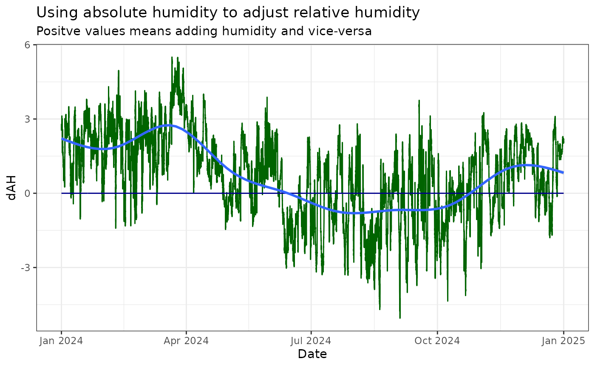
# Graph Air Density
head(mydata) |>
graph_psychrometric(y_func = calcAD) +
theme_bw()
# Changing Temperature
using_calcTemp <-
mydata |>
mutate(
# Absolute humidity, AH
AH = calcAH(Temp, RH),
# Dew point, DP
DP = calcDP(Temp, RH),
# Target RH
tRH = 50,
# T*: Tstar new temperature at target RH
Tstar = calcTemp(tRH, DP),
# Difference in measure temperature and new temperature
dTemp = Tstar - Temp,
# Check
Tcheck = Tstar - (Temp + dTemp),
# RHstarT: New humidity with new temperature
RHstarT = calcRH_DP(Tstar, DP),
# Error
RHerrorT = RHstarT - tRH
)
# Graph the results
using_calcTemp |>
ggplot() +
geom_line(aes(Date, Temp), col = "red", alpha = 0.5) +
geom_line(aes(Date, RH), col = "blue", alpha = 0.5) +
geom_line(aes(Date, Tstar), col = "darkred") +
geom_line(aes(Date, RHstarT), col = "darkblue") +
labs(title = "Using temperature to adjust relative humidity") +
theme_bw()
# Plot the difference and check the error
using_calcTemp |>
ggplot() +
geom_line(aes(Date, dTemp), col = "darkred") +
geom_line(aes(Date, RHerrorT), col = "darkblue") + # should be a straight line (see below)
geom_smooth(aes(Date, dTemp)) +
labs(title = "Using temperature to adjust relative humidity",
subtitle = "Positve values means increasing the temperature and vice-versa") +
theme_bw()
# Graph Dew Point
head(mydata) |>
graph_psychrometric(y_func = calcDP) +
theme_bw()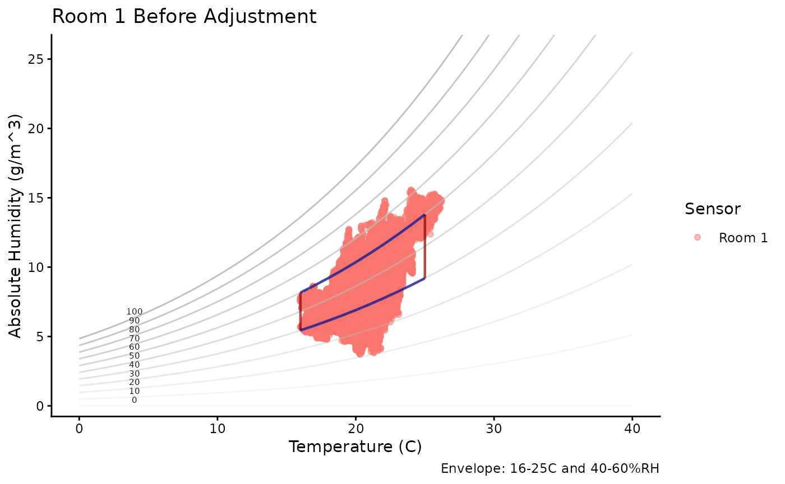
# Using Dew Point
using_calcDP <-
mydata |>
mutate(
# Absolute humidity, AH
AH = calcAH(Temp, RH),
# Dew point, DP
DP = calcDP(Temp, RH),
# Target RH
tRH = 50,
# DP*: DPstar new dew point at target RH
DPstar = calcDP(Temp, tRH),
# RH*: New relative humidity at new dew point
RHstarDP = calcRH_DP(Temp, DPstar),
# Difference in measured dew point and new dew point
dDP = DPstar - DP,
# Error
RHerrorDP = RHstarDP - tRH
)
using_calcDP |>
ggplot() +
geom_line(aes(Date, Temp), col = "red", alpha = 0.5) +
geom_line(aes(Date, RH), col = "blue", alpha = 0.5) +
geom_line(aes(Date, DP), col = "hotpink") +
geom_line(aes(Date, DPstar), col = "purple") +
geom_line(aes(Date, RHstarDP), col = "darkblue") +
labs(title = "Using dew point to adjust relative humidity") +
theme_bw()
# Plot the difference and check the error
using_calcDP |>
ggplot() +
geom_line(aes(Date, dDP), col = "purple") +
geom_line(aes(Date, RHerrorDP), col = "darkblue") + # should be a straight line (see below)
geom_smooth(aes(Date, dDP)) +
labs(title = "Using dew point to adjust relative humidity",
subtitle = "Positve values means increasing the dew point and vice-versa") +
theme_bw()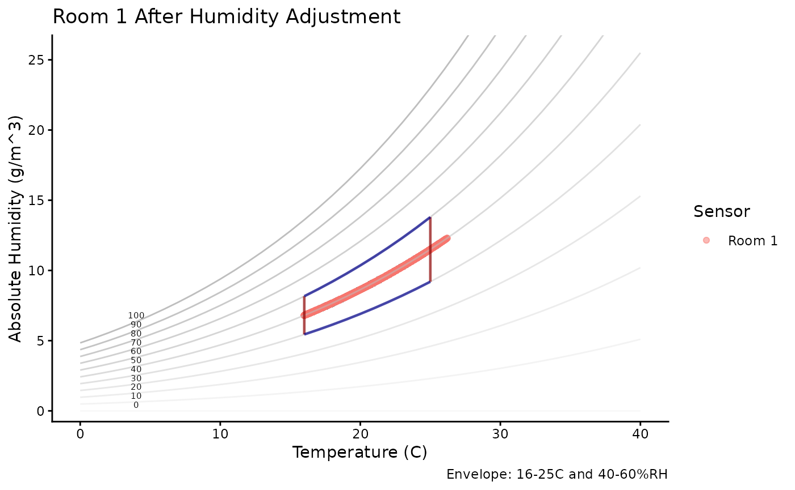
Temperature
calcTemp
The temperature calculations are explored to determine the accuracy of temperature derivation using dew point and relative humidity. Visualisation of the temperature calculation against the original temperature and relative humidity. The temperature calculation is presented as a filled contour plot of the calculated temperature using calcTemp through dew point which is calculated using calcDP.
head(mydata) |> dplyr::mutate(DewPoint = calcDP(Temp, RH), Temp2 = calcTemp(RH, DewPoint))
#> # A tibble: 6 × 7
#> Site Sensor Date Temp RH DewPoint Temp2
#> <chr> <chr> <dttm> <dbl> <dbl> <dbl> <dbl>
#> 1 London Room 1 2024-01-01 00:00:00 21.8 36.8 6.38 21.8
#> 2 London Room 1 2024-01-01 00:15:00 21.8 36.7 6.34 21.8
#> 3 London Room 1 2024-01-01 00:29:59 21.8 36.6 6.30 21.8
#> 4 London Room 1 2024-01-01 00:44:59 21.7 36.6 6.22 21.7
#> 5 London Room 1 2024-01-01 00:59:59 21.7 36.5 6.18 21.7
#> 6 London Room 1 2024-01-01 01:14:59 21.7 36.2 6.06 21.7
TRHgrid |>
mutate(
DewPoint = calcDP(Temp, RH),
TempCalc = calcTemp(RH, DewPoint)
) |>
ggplot(aes(Temp, RH, z = TempCalc)) +
geom_contour_filled(bins = 20, breaks = seq(-50, 100, 10)) +
labs(title = "Calculated temperature vs actual",
subtitle = "calcDP(Temp, RH) > DewPoint > TempCalc") +
theme_bw()
Visualisation of the temperature calculation against the original temperature and relative humidity. The plot aims to validate the accuracy and consistency of temperature calculations based on relative humidity and dew point.
TRHgrid |>
mutate(
DewPoint = calcDP(Temp, RH),
TempCalc = calcTemp(RH, DewPoint),
Temp_error = TempCalc - Temp
) |>
ggplot(aes(Temp, RH, z = Temp_error)) +
geom_contour_filled(bins = 20) +
labs(title = "Difference between calculated temperature vs actual",
subtitle = "calcDP(Temp, RH) > DewPoint > TempCalc - Temp (original)") +
theme_bw()
Relative Humidity
calcRH_AH and calcRH_DP
This section investigates relative humidity calculations using derivations from dew point and absolute humidity. Contour plots demonstrate the relationships between calculated and original relative humidity values and the errors.
TRHgrid |>
mutate(
DewPoint = calcDP(Temp, RH),
RH_DPcalc = calcRH_DP(Temp, DewPoint)
) |>
ggplot(aes(Temp, RH, z = RH_DPcalc)) +
geom_contour_filled(bins = 20, breaks = seq(0, 100, 5)) +
labs(title = "Calculated humidity via dew point vs actual",
subtitle = "calcDP(Temp, RH) > DewPoint > RHcalc") +
theme_bw()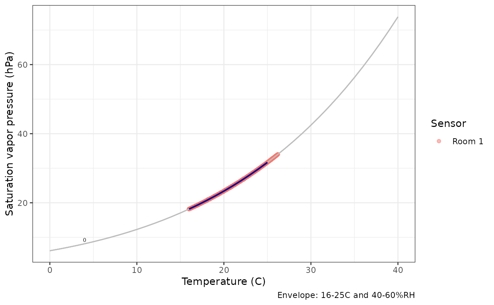
TRHgrid |>
mutate(
DewPoint = calcDP(Temp, RH),
RH_DPcalc = calcRH_DP(Temp, DewPoint),
RH_DP_error = RH_DPcalc - RH
) |>
ggplot(aes(Temp, RH, z = RH_DP_error)) +
labs(title = "Calculated humidity vs actual",
subtitle = "calcDP(Temp, RH) > DewPoint > RHcalc - RH (original)") +
geom_contour_filled(bins = 20) +
theme_bw()
TRHgrid |>
mutate(RH_AHcalc = calcRH_AH(Temp, calcAH(Temp, RH))) |>
ggplot(aes(Temp, RH, z = RH_AHcalc)) +
geom_contour_filled(bins = 20, breaks = seq(0, 100, 5)) +
labs(title = "Calculated humidity via absolute humidity vs actual",
subtitle = "calcAH(Temp, RH) > Absolute humidity > RHcalc - RH (original)") +
theme_bw()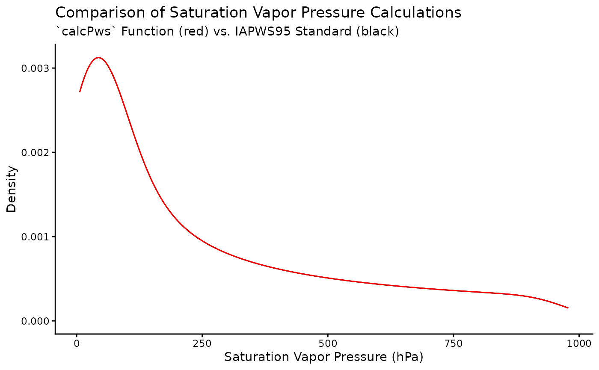
TRHgrid |>
mutate(RH_AH_error = calcRH_AH(Temp, calcAH(Temp, RH)) - RH) |>
ggplot(aes(Temp, RH, z = RH_AH_error)) +
labs(title = "Calculated humidity via absolute humidity vs actual",
subtitle = "calcAH(Temp, RH) > Absolute humidity > RHcalc - RH (original)") +
geom_contour_filled(bins = 20) +
theme_bw()Absolute humidity
calcAH
The graph shows how absolute temperature varies with changing temperature and relative humidity.
# Graph Absolute Humidity
head(mydata) |>
graph_psychrometric(y_func = calcAH) +
theme_bw()
Specific humidity
calcSH
# Graph Specific Humidity
head(mydata) |>
graph_psychrometric(y_func = calcSH) +
theme_bw()
Dew Point
calcDP
The graphs shows how the dew point temperature varies with changing temperature and relative humidity.
# Graph Dew Point
head(mydata) |>
graph_psychrometric(y_func = calcDP) +
theme_bw()
TRHgrid |>
mutate(DP = calcDP(Temp, RH)) |>
ggplot(aes(Temp, RH, z = DP)) +
geom_contour_filled(bins = 20) +
theme_bw()
Water vapour saturation pressure
calcPws
- Saturation vapor pressure calculation
# Graph Saturation vapor pressure
head(mydata) |>
graph_psychrometric(y_func = calcPws) +
theme_bw()
TRHgrid |>
mutate(Pws = calcPws(Temp)) |>
ggplot(aes(Temp, RH, z = Pws)) +
geom_contour_filled(bins = 20) +
theme_bw()
Water vapour pressure
calcPw
- Actual water vapor pressure determination
# Graph Saturation vapor pressure
head(mydata) |>
graph_psychrometric(y_func = calcPw) +
theme_bw()
TRHgrid |>
mutate(Pw = calcPw(Temp, RH)) |>
ggplot(aes(Temp, RH, z = Pw)) +
geom_contour_filled(bins = 20) +
theme_bw()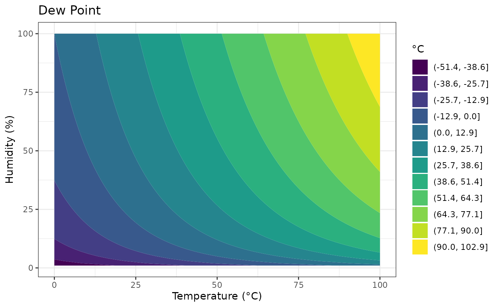
Mixing ratio
calcMR
# Graph Mixing Ratio
head(mydata) |>
graph_psychrometric(y_func = calcMR) +
theme_bw()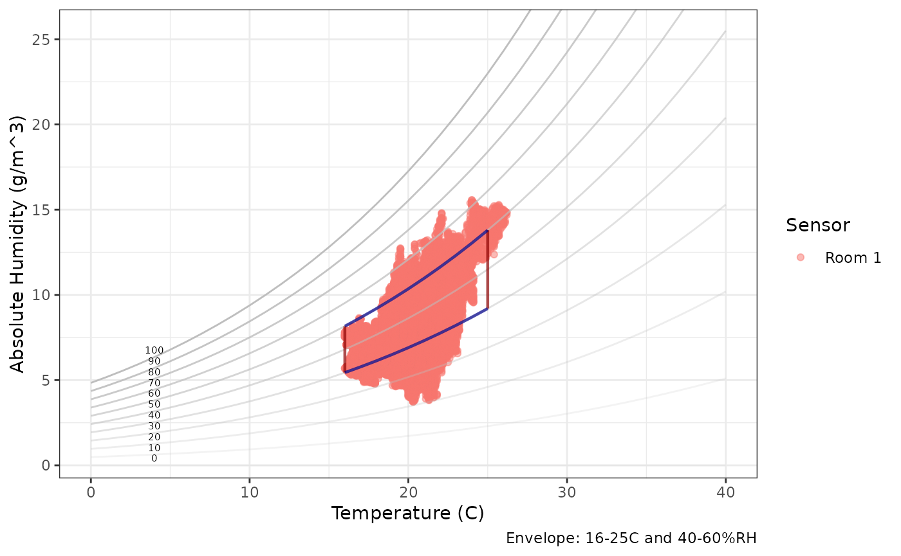
TRHgrid |>
mutate(MR = calcMR(Temp, RH)) |>
ggplot(aes(Temp, RH, z = MR)) +
geom_contour_filled(bins = 20) +
theme_bw()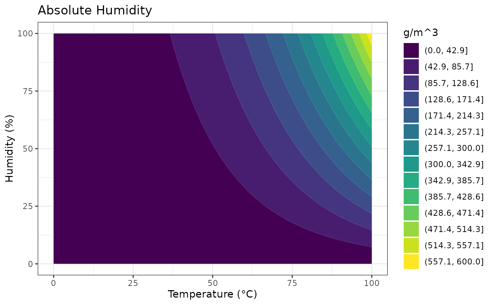
Humidity ratio
calcHR
# Graph Humidity Ratio
head(mydata) |>
graph_psychrometric(y_func = calcHR) +
theme_bw()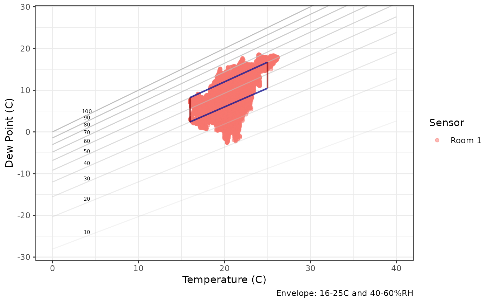
TRHgrid |>
mutate(HumidityRatio = calcHR(Temp, RH)) |>
ggplot(aes(Temp, RH, z = HumidityRatio)) +
geom_contour_filled(bins = 20) +
theme_bw()
Air density
calcAD
# Graph Air Density
head(mydata) |>
graph_psychrometric(y_func = calcAD) +
theme_bw()
TRHgrid |>
mutate(AirDensity = calcAD(Temp, RH)) |>
ggplot(aes(Temp, RH, z = AirDensity)) +
geom_contour_filled(bins = 20) +
theme_bw()
Enthalpy
calcEnthalpy
# Graph Enthalpy
head(mydata) |>
graph_psychrometric(y_func = calcEnthalpy) +
theme_bw()
TRHgrid |>
mutate(Enthalpy = calcEnthalpy(Temp, RH)) |>
ggplot(aes(Temp, RH, z = Enthalpy)) +
geom_contour_filled(bins = 20) +
theme_bw()
TRHgrid |>
mutate(Enthalpy_log10 = calcEnthalpy(Temp, RH) |> log10()) |>
ggplot(aes(Temp, RH, z = Enthalpy_log10)) +
geom_contour_filled(bins = 20) +
theme_bw()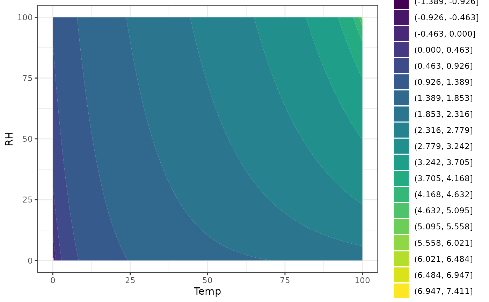